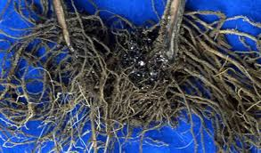
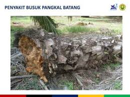
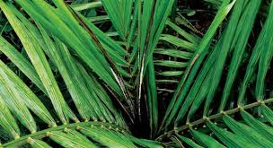
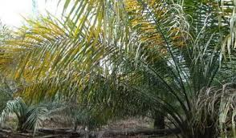
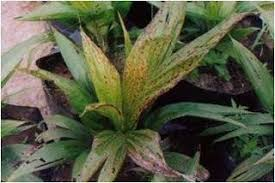
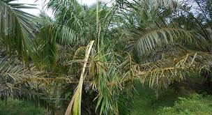

Penyakit pada Tanaman Sawit
Penyakit Akar (Blast Disease)
- Penyebab: Jamur Rhizoctonia lamellifera dan Phytium sp.
- Gejala: Tanaman tumbuh tidak normal, lemah, dan daun berubah warna dari hijau menjadi kuning (nekrosis).
- Penanganan:
- Budidaya yang baik dan benar.
- Menggunakan bibit sehat dan berkualitas.
- Pengaplikasian fungisida untuk mencegah infeksi.
Penyakit Busuk Pangkal Batang (Basal Stem Rot)
- Penyebab: Jamur Ganoderma applanatum, Ganoderma lucidum, dan Ganoderma pseudofferum.
- Gejala: Daun hijau pucat, pangkal batang menghitam, dan batang membusuk.
- Penanganan:
- Membersihkan lahan dari sisa-sisa tanaman terinfeksi.
- Menggunakan bibit sehat.
- Melakukan pengapuran untuk meningkatkan pH tanah.
Penyakit Busuk Kuncup (Spear Rot)
- Penyebab: Penyebab belum diketahui secara pasti.
- Gejala: Kuncup membengkok dan jaringan membusuk.
- Penanganan:
- Memotong bagian kuncup yang terinfeksi.
Penyakit Garis Kuning (Patch Yellow)
- Penyebab: Jamur Fusarium oxysporum.
- Gejala: Bercak kuning pada daun, daun mengering dan gugur.
- Penanganan:
- Inokulasi penyakit pada bibit dan tanaman muda untuk mengurangi infeksi.
Penyakit Antraknosa
- Penyebab: Jamur Melanconium sp, Glomerella cingulata, dan Botryodiplodia palmarum.
- Gejala: Bercak cokelat pada daun, daun mengering.
- Penanganan:
- Menggunakan bibit sehat.
- Pemeliharaan yang baik dan pengaturan jarak tanam.
Penyakit Tajuk (Crown Disease)
- Penyebab: Gen keturunan dari tanaman induk.
- Gejala: Pelepah bengkok, helai daun kecil atau tidak ada.
- Penanganan:
- Menggunakan bibit berkualitas dan menyingkirkan tanaman berpenyakit.